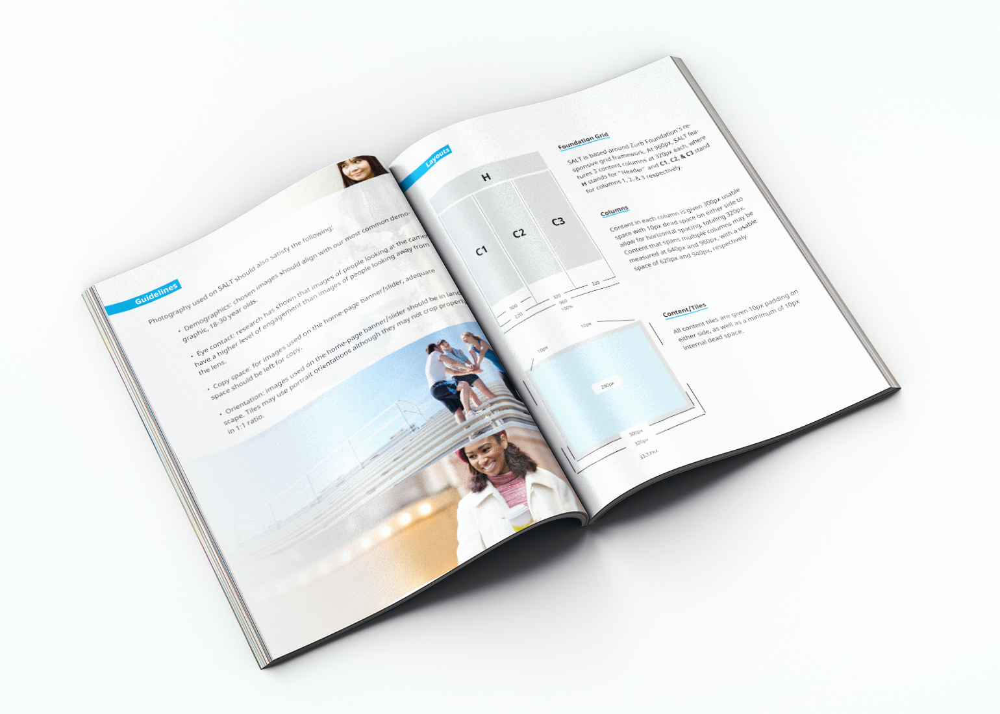

SALT Redesign
Disclaimer: This is a UX case study, not pretty UI stuff. You can find that here instead.
SALT began as an effort by the American Student Assistance (ASA) to connect with a generation of students struggling with loans. After a massive branding & design project undertaken by none other than HUGE, the site was revealed and a dedicated product team was formed solely for the maintenance of the product.
Unfortunately, due to limited development resources, the original SALT site strayed from HUGE's design comps almost from the start. Only the brand identity and marketing work stayed true, while the site struggled to keep up with modern web trends. This was less than optimal, and the results were a site with bad UX, low retention, and turnover rates that relied solely on massive marketing campaigns.
Original Site:
On the formation of a dedicated Boston-based UX team, we slowly progressed in developing a standardized site experience in parallal to a major site redesign. For several months, I conducted an exhaustive site-wide audit with the main goal of defining a standard for all interactions, visual cues, and UI elements. The result was a 50-page User Experience style-guide. In the document, I also included a new set of photography guidelines, copywriting requirements and & legal guidelines:
Our main goal was to solve the dilemma of many content-producing sites: how to engage and retain users. Our answer was to provide value through specialized paths or "user goals" that could be selected to provide suggested content and valuable tools to registered members. In the end, this was the backbone of our IA, and is the most prominent feature of the site to this day:
A Dash of SALT
Phase two of the project solidified into a "user dashboard" of sorts, which would pull data from the user's onboarding process to display relevant content and tools. While the dashboard will not be fully developed until the second quarter of 2015, our usability testing with Communispace's community members was an enlightening experience on its own.
After considerable testing with real users, the first round of wireframes was considered a failure and shelved. We adapted, and the implementation of a flat, touch friendly "task list" and a considerable reduction of on-screen content provided less cognitive overload and was a resounding success during user testing.
Pinch to zoom on mobile:
The above changes are mainly:
- Dashboard tool/data was redesigned to more closely resemble wireframe (and it looks better!) I also added customizable reminder modules below, which increased the user's perception of value.
- "To-do list" UX completely re-built. I made sure the focus was on a pervasive, non-obligatory interaction on the sidebar rather than an unintuitive feature of the dashboard.
- The "library" served as guided browsing according to user requirements, but it wasn't clear where content could be found without exiting the flow through the nav-bar. On the revised frame, I placed suggested content directly within the fold, and allowed users to continue their guided browsing from there on.
- Top 3 Tasks, Suggested Tasks, and To-Do list were originally all separate items. I simplified the process by consolidating all 3 and placed them in a dedicated list management page
The main goal of the dashboard is to engage users by letting them know that any and all volunteered information will be for their educational and financial benefit. User-testing confirmed this value proposition worked, and we recently began work on adjustments and final tests before development. Below is a simple chart displaying the branched user-flow.
To see my proposed future-state of the SALT website, check out my Table SALT redesign.